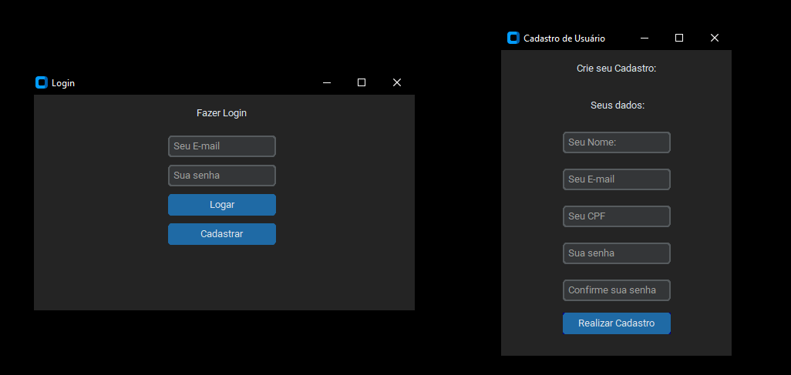

Minhas habilidades em Docker, Linux, Jenkins, Robot Framework e Selenium me permitem construir pipelines de automação eficientes, que considero fundamentais para a Q.A. Realizei grandes projetos de automação, de Python, SQL, html e CSS, no qual demonstra minha adaptabilidade e capacidade de resolver problemas. Além disso, possuo certificação em metodologias ágeis (Kanban, Scrum e XP), no qual complementa meu objetivo de aplicar práticas eficientes na entrega de software de alta qualidade, colaborando ativamente com desenvolvedores.
Formação
Engenharia da Computação
UNESA - Estacio de Sá | 2019/08 - 2023/02
MBA Gestão de Projetos de TI
FAVENI | 2023/05 - 2024/06
Projetos:
Aplicativo de Login
Desenvolvi uma aplicação que realiza uma comunicação com o banco de dados. Verificado se o usuário esta incluso no sistema, além disso desenvolvi uma conexão que permite o cadastro unico de maneira facilitada no banco de dados com uma interface amigável. Este projeto demonstra minha capacidade em integrar tecnologias para soluções eficientes por meio de testes de entrada segura de dados no sistema.
Tecnlogias utilizadas:Python, Custom Tkinter, MySQL Connector e Programação orientada a objetos.
